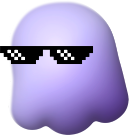

Juno: создание дейтинга с игровыми механиками

Контекст
Запустить собственный дейтинг
В октябре 2024 года мы начали создавать Juno — дейтинг с игровыми механиками. Небольшой команде нужно было найти отличие от существующих сервисов и ограничить первую версию так, чтобы довести основные сценарии до реализации.
Моя роль
Сооснователь и продуктовый дизайнер
Как сооснователь и продуктовый дизайнер я участвовал в выборе направления продукта, приоритизации MVP и разработке монетизации. Предложил игры как дополнительный повод для взаимодействия.
Я исследовал конкурентов и аудиторию, проектировал онбординг, ленту анкет, платные функции, магазин и игры. Также рассчитывал экономику Premium и ограничения игровых механик.
Исследования
Аудитория и проблема
Мы разделили аудиторию по ситуации знакомства и мотивации. Для дальнейшей проверки выделили четыре сегмента:
- Приезжие — ищут круг общения в новом городе и людей с общими интересами.
- Неуверенные в общении — хотят познакомиться, но испытывают трудности с первым сообщением и боятся отказа.
- Активно знакомящиеся — хотят привлекать внимание и поддерживать несколько диалогов.
- Избирательные — хотят заранее понять намерения и совместимость, прежде чем тратить время на встречу.
Для каждого сегмента описали ситуацию, мотивацию и ожидаемый результат знакомства. Общая задача — перейти от просмотра анкеты к разговору: понять намерения человека и найти повод написать.
Отдельно выделили комфорт женской аудитории и защиту от скама. Сегменты, их долю и готовность платить планировали проверить через опросы и интервью.
Конкуренты
Какие подходы сравнивали
Мы сравнили онбординг, просмотр анкет, первый контакт, приватность и платные ограничения в дейтингах. Помимо свайпов изучили случайное общение, тесты на совместимость и игровые сценарии.
Для Juno выбрали гипотезу: игры могут дать пользователям дополнительный повод для взаимодействия.
Приоритизация
Как ограничили первую версию
Мы оценивали идеи по пользе для знакомства и сложности разработки. В первую версию включили профиль с интересами, поиск по городу и расстоянию, чат, онлайн-статус и подсказки для начала диалога. Игры стали отличительной механикой Juno.
Верификацию по лицу, видеоприветствия, ИИ-помощника и интеграции с заведениями отложили. Это позволило ограничить объём MVP и сосредоточиться на основных сценариях.
Монетизация
Премиум, суперлайки и разовые покупки
Мы выбрали freemium: базовое знакомство доступно бесплатно, а дополнительные возможности оплачиваются отдельно. При небольшой аудитории обязательная оплата на входе могла затруднить привлечение пользователей.
Premium увеличивает лимиты, суперлайки выделяют интерес к человеку, а буст повышает охват анкеты. Дополнительно предусмотрели платный возврат к предыдущей анкете и покупки игровых предметов.
Я оценивал необходимость подписки и рассчитывал её экономику: какую ценность она даёт пользователю и какое место занимает среди разовых покупок.
Взаимодействия
Знакомый сценарий, свой визуальный стиль
Я сохранил привычную логику просмотра анкет и свайпов, добавив собственный визуальный стиль и обратную связь для действий. Так первое знакомство с Juno опирается на понятные сценарии, а характер продукта проявляется в деталях взаимодействия.
Онбординг
От первого входа к знакомству
Я спроектировал онбординг вокруг данных, необходимых для начала знакомства. Цель — быстрее привести пользователя к просмотру подходящих анкет. Связь с Telegram-аккаунтом предусмотрели как канал возвращения в продукт.
Магазин
Дополнительные игровые предметы
Мы изучили монетизацию мобильных игр, чтобы спроектировать магазин дополнительных предметов. Я рассчитал средние лимиты зарядов энергии и определил ограничения игровых механик для MVP.

Тетрис
Знакомая механика, яркий интерфейс
При изучении мобильных игровых предпочтений женской аудитории мы выделили казуальные игры и выбрали для MVP Тетрис и 2248. В Тетрисе я сохранил знакомые правила, а яркий интерфейс и обратную связь связал с визуальным стилем Juno.


2248
Понятная игра для широкой аудитории
Второй игрой стала 2248: её правила легко объяснить, а ходы требуют планирования. В исследовании мы отметили интерес к ней у мужской и женской аудитории, поэтому включили её в первую версию вместе с Тетрисом.
Разработка и итог
Основные механики реализованы, развитие приостановлено
Основные механики удалось реализовать. Дальнейшую работу приостановили на неопределённый срок: команда не договорилась о финансировании и оценке вклада участников.